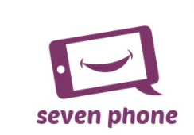

<link rel="stylesheet" type="text/css" href="tarea4.css">
<header id="main-header">
	
	<a id="logo-header" href="#">
		<span class="site-name">SEVEN PHONE</span>
		<span class="site-desc">LO  MEJOR EN TECNOLOGIA</span>
	</a>
<nav>
		<ul>
			<li><a href="home2.html">Inicio</a></li>
			<li><a href="acercade.html">Acerca de</a></li>
			<li><a href="productos.html">Productos y Servicios</a></li>
			<li><a href="contacto.html">Contacto</a></li>
			<li><a href="cliente.html">Suscribcion Cliente</a></li>
		</ul>
	</nav>

</header>
</header>


<section id="main-content">

	<article>
		
		
		
		
		<div class="content">
			
>

			<h1>Mision</h1>
			
			<p>Proporcionar soluciones integrales y de calidad en telecomunicaciones,  manteniendo el liderazgo en el mercado, altos estándares de responsabilidad en la gestión ambiental y social; y,   nuestro compromiso con clientes,  empleados,  accionistas, proveedores  y  aliados y de hecho, nuestra misión es que cada persona tenga un teléfono móvil en su mano, ya que creemos que la tecnología es una poderosa herramienta para el avance social. Al conectar a la gente con productos y servicios móviles, podemos ayudarlos a mejorar.

			</p>

			<h1>Vision</h1>
			
			<p>La visión de la empresa es “Inspirar al mundo, crear el futuro”.  Pero también  se guía por una visión singular: encabezar el movimiento de convergencia digital.
A través de la innovación tecnológica actual, se encuentra las soluciones que necesitan para dar respuesta a los retos del mañana. La tecnología crea oportunidades para que se desarrollen las empresas, prosperen los ciudadanos que viven en los mercados emergentes al acceder a la economía digital, y las personas en general inventen nuevas posibilidades.

			</p>
			<h1>Objetivos</h1>
			
			<p>Desarrollar tecnologías innovadoras y procesos eficientes que creen nuevos mercados, que enriquezcan las vidas de las personas y sigan haciendo de Seven Phone un respetado líder del mercado.
			</p><p>
Ser una de las tres principales compañías de telefonia del mundo.</p>
<p>

Ser una de las tres empresas primeras empresas del mundo en términos de tendencias de nueva patente.</p>


<h1>Logotipo</h1>
			<p>
<center></center>
           
</p>
		</div>
		
	</article>	
</section>


<footer id="main-footer">
	<p>No Copyright, Villa Nueva ,Guatemala C.A, 2020</p>
</footer>